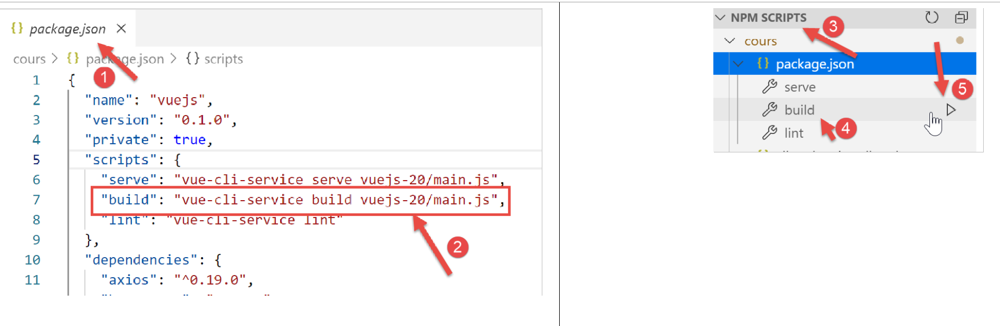
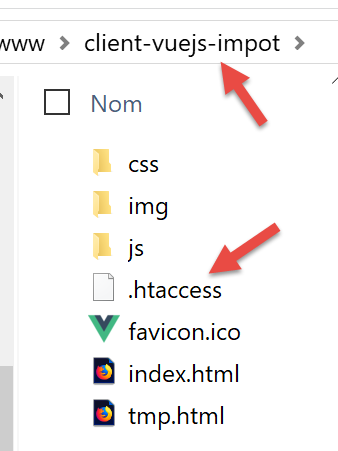

18. 税务计算服务器的客户端 Vue.js
18.1. Architecture
我们将实现一个具有以下架构的客户端/服务器应用程序：

税费计算服务器将采用文档 |https://tahe.developpez.com/tutoriels-cours/php7| 中开发的第 14 版
18.2. 应用程序的视图
[vuejs-10] 应用程序的视图与文档 |https://tahe.developpez.com/tutoriels-cours/php7| 中第 13 版税费计算服务器的视图一致，当该服务器以 HTML 模式运行时。 但在本应用中，这些视图将由 JavaScript 客户端生成，而非由 PHP 服务器生成。
第一个视图是身份验证视图：

第二个视图是税额计算视图：

第三个视图是显示用户所做模拟列表的视图：

上图显示可以删除第1个模拟。随后将显示以下界面：

如果现在删除最后一个模拟，将显示如下新视图：

18.3. 项目元素 [vuejs-20]
项目 [vuejs-20] 的结构如下：

该项目的组成部分如下：
- [assets/logo.jpg]：项目徽标；
- [couches]：应用程序的 [métier] 和 [dao] 层；
- [plugins]：应用程序的插件；
- [views]：应用程序的视图；
- [config.js]：配置应用程序；
- [router.js]：定义应用程序的路由；
- [store.js]：[Vuex] 的存储；
- [main.js]：应用程序的主脚本；
18.3.1. [métier] 和 [dao] 层
18.3.1.1. [dao] 层
[dao] 层由 |vuejs-10| 段落中的 [Dao] 类实现
18.3.1.2. [métier] 层
[métier] 层由文档 |https://tahe.developpez.com/tutoriels-cours/php7| 中的 [Métier] 类实现。 其中添加了以下 [setTaxAdminData] 方法：
// 构造函数
constructor(taxAdmindata) {
// this.taxAdminData：税务管理数据
this.taxAdminData = taxAdmindata;
}
// 设置器
setTaxAdminData(taxAdmindata) {
// this.taxAdminData：税务部门数据
this.taxAdminData = taxAdmindata;
}
方法 [setTaxAdminData] 与构造函数的功能相同。它的存在使得以下操作序列成为可能：
- 当需要实例化类但尚未拥有数据 [taxAdminData] 时，使用指令 [métier=new Métier()] 来实例化类 [Métier]；
- 随后通过操作 [métier.setTaxAdminData(taxAdmindata)] 填充其属性 [taxAdminData]；
18.3.2. 配置文件 [config]
文件 [config.js] 内容如下：
// QZXW2HTML库的使用 BW2F4aW9zXQZQX
const axios = require('axios');
// 请求超时 HTTP
axios.defaults.timeout = 2000;
// 税款计算服务器的 URL 数据库
// [https] 架构在 Firefox 中存在问题，因为税款计算服务器
// 发送了自签名证书。Chrome和Edge正常。Safari未测试。
axios.defaults.baseURL = 'https://localhost/php7/scripts-web/impots/version-14';
// 我们将使用Cookie
axios.defaults.withCredentials = true;
// 导出配置
export default {
axios: axios
}
此配置属于库文件 [axios]，[dao] 层使用该库来执行其 HTTP 请求。请注意第 8 行，服务器运行在安全端口 [https] 上。
18.3.3. 插件
[pluginDao, pluginMétier, pluginConfig] 插件旨在为函数/类 [Vue] 创建三个新属性：
- [$dao]：其值为 [Dao] 类的实例；
- [$métier]：其值为 [Métier] 类的实例；
- [$config]：其值为配置文件 [config] 导出的对象；
[pluginDao]
export default {
install(Vue, dao) {
// 向 Vue 类添加属性 [$dao]
Object.defineProperty(Vue.prototype, '$dao', {
// 当引用 Vue.$dao 时，返回第二个参数 [dao]
get: () => dao,
})
}
}
[pluginMétier]
export default {
install(Vue, métier) {
// 向 Vue 类添加属性 [$métier]
Object.defineProperty(Vue.prototype, '$métier', {
// 当引用 Vue.$métier 时，将返回第二个参数 [métier]
get: () => métier,
})
}
}
[pluginConfig]
export default {
install(Vue, config) {
// 为视图类添加属性 [$config]
Object.defineProperty(Vue.prototype, '$config', {
// 当引用 Vue.$config 时，将返回第二个参数 [config]
get: () => config,
})
}
}
18.3.4. [Vuex] 存储
[Vuex] 控件由以下文件 [store] 实现：
// Vuex 插件
import Vue from 'vue'
import Vuex from 'vuex'
Vue.use(Vuex);
// Vuex 存储
const store = new Vuex.Store({
state: {
// 模拟表
simulations: [],
// 最后一次模拟的编号
idSimulation: 0
},
mutations: {
// 删除索引号行
deleteSimulation(state, index) {
// eslint-disable-next-line no-console
console.log("mutation deleteSimulation");
// 删除第 [index] 行
state.simulations.splice(index, 1);
// eslint-disable-next-line no-console
console.log("store simulations", state.simulations);
},
// 添加了一个模拟
addSimulation(state, simulation) {
// eslint-disable-next-line no-console
console.log("mutation addSimulation");
// 模拟编号
state.idSimulation++;
simulation.id = state.idSimulation;
// 将模拟添加到模拟列表中
state.simulations.push(simulation);
},
// 清理状态
clear(state) {
state.simulations = [];
state.idSimulation = 1;
}
}
});
// 导出对象 [store]
export default store;
注释
- 第 2-4 行：将插件 [Vuex] 集成到框架 [Vue] 中；
- 第 8-13 行：我们将以下元素放入 [Vuex] 的存储中：
- [simulations]：用户执行的模拟列表；
- [idSimulation]：用户最近一次模拟的编号；
需要提醒的是，该存储将在视图之间共享，且其内容具有响应性：当内容发生更改时，使用该存储的视图会自动更新。在我们的应用程序中，仅 [simulations] 元素需要具备响应性，而 [idSimulation] 元素则不需要。 出于方便，我们将其保留在数据存储中；
- 第 14-40 行：对第 8-13 行中的 [state] 对象允许的修改操作。需注意，这些操作始终将第 8-13 行中的 [state] 对象作为第一个参数接收；
- 第 16 行：变体 [deleteSimulation] 用于删除编号为 [index] 的模拟；
- 第25行：通过[addSimulation]操作，可在模拟表中添加一个新的模拟；
- 第35行：变更[clear]可重置第8-13行中的对象[state]；
18.3.5. 路由文件 [router]
路由文件如下：
// 导入
import Vue from 'vue'
import VueRouter from 'vue-router'
// 视图
import Authentification from './views/Authentification'
import CalculImpot from './views/CalculImpot'
import ListeSimulations from './views/ListeSimulations'
// 路由插件
Vue.use(VueRouter)
// 应用程序路由
const routes = [
// 身份验证
{
path: '/', name: 'authentification', component: Authentification
},
// 税款计算
{
path: '/calcul-impot', name: 'calculImpot', component: CalculImpot
},
// 模拟列表
{
path: '/liste-des-simulations', name: 'listeSimulations', component: ListeSimulations
},
// 结束会话
{
path: '/fin-session', name: 'finSession', component: Authentification
}
]
// 路由器
const router = new VueRouter({
// 路由
routes,
// 浏览器中路由的显示模式
mode: 'history',
})
// 路由器导出
export default router
注释
- 第 16 行：应用程序启动时，显示的是视图 [Authentification]，因为其父视图 URL 是根视图 [/]；
- 第 20 行：当调用 URL 时，将显示视图 [CalculImpot]；
- 第 24 行：当请求 URL 或 [/liste-des-simualtions] 时，将显示视图 [ListeSimulations]；
- 第 28 行：当请求 URL 或 [/fin-session] 时，将显示视图 [Authentification]；
- 第33-38行：创建了一个[router]对象，其中包含这些路由（第35行）以及[history]管理模式（第37行）；
- 第 41 行：导出该路由器；
18.3.6. 主脚本 [main.js]
脚本 [main.js] 如下：
// 导入
import Vue from 'vue'
// 主视图
import Main from './views/Main.vue'
// 插件 [bootstrap-vue]
import BootstrapVue from 'bootstrap-vue'
Vue.use(BootstrapVue);
// CSS 引导程序
import 'bootstrap/dist/css/bootstrap.css'
import 'bootstrap-vue/dist/bootstrap-vue.css'
// 路由器
import router from './router'
// 插件 [config]
import config from './config';
import pluginConfig from './plugins/pluginConfig'
Vue.use(pluginConfig, config)
// [dao] 层实例化
import Dao from './couches/Dao';
const dao = new Dao(config.axios);
// 插件 [dao]
import pluginDao from './plugins/pluginDao'
Vue.use(pluginDao, dao)
// [métier] 层实例化
import Métier from './couches/Métier';
const métier = new Métier();
// 插件 [métier]
import pluginMétier from './plugins/pluginMétier'
Vue.use(pluginMétier, métier)
// Vuex 存储
import store from './store'
// 启动 UI
new Vue({
el: '#应用，
// 路由器
router: router,
// Vuex 存储
store: store,
// 主视图
render: h => h(Main),
})
请注意以下几点：
- 第18-21行，由脚本[./config]导出的对象将出现在属性[Vue.$config]中，因此可在应用程序的所有视图中使用。 此处无需如此，因为对象 [config] 仅由脚本 [main] 使用（第 25 行）。不过，配置通常需要供多个视图使用。因此，此处仍遵循将其置于视图属性中的原则；
- 第 24-25 行：实例化 [dao] 层。 第 24 行导入类 [Dao]，并在第 25 行对其进行实例化。其构造函数仅接受一个参数：配置属性对象 [axios]；
- 第27-29行：[dao]层在所有视图的[$dao]属性中可用；
- 第31-37行：对图层[métier]重复相同的操作序列。 类[Métier]的构造函数参数为[taxAdminData]，该参数代表税务管理数据。我们目前尚未获取该数据。因此，第33行的对象[métier]需稍后补充；
- 第40行：导入存储对象[Vuex]；
- 第43-51行：实例化主视图[Main]（第5行和第50行），并向其传递两个参数：
- 第46行：定义第16行中的路由器[router]；
- 第 48 行：定义了在第 40 行定义的 [Vuex] [store] 存储；
- 在这两种情况下，属性名位于左侧，其值位于右侧。[router, store]的属性名由[vue-router]和[vuex]框架确定。关联的值可以是任意值；
18.4. 应用程序的视图
18.4.1. 主视图 [Main]
主视图 [Main] 的代码如下：
<!-- 视图定义 -->
<template>
<div class="container">
<b-card>
<!-- 巨型显示屏 -->
<b-jumbotron>
<b-row>
<b-col cols="4">
<img src="../assets/logo.jpg" alt="Cerisier en fleurs" />
</b-col>
<b-col cols="8">
<h1>Calculez votre impôt</h1>
</b-col>
</b-row>
</b-jumbotron>
<!-- HTTP 请求错误 -->
<b-alert
show
variant="danger"
v-if="showError"
>L'erreur suivante s'est produite : {{error.message}}</b-alert>
<!-- 当前视图 -->
<router-view v-if="showView" @loading="mShowLoading" @error="mShowError" />
<!-- 加载中 -->
<b-alert show v-if="showLoading" variant="light">
<strong>Requête au serveur de calcul d'impôt en cours...</strong>
<div class="spinner-border ml-auto" role="status" aria-hidden="true"></div>
</b-alert>
</b-card>
</div>
</template>
<script>
export default {
// 名称
name: "app",
// 内部状态
data() {
return {
// 检查待处理警报
showLoading: false,
// 控制错误警报
showError: false,
// 控制当前路由视图的显示
showView: true,
// 一条错误消息
error: ""
};
},
// 事件处理程序
methods: {
// 异步请求错误
mShowError(error) {
// eslint-disable-next-line
console.log("Main evt error");
// 显示错误消息
this.error = error;
this.showError = true;
// 隐藏路由视图
this.showView = false;
// 隐藏加载提示
this.showLoading = false;
},
// 是否显示加载图标
mShowLoading(value) {
// 禁用 eslint 下一行检查
console.log("Main evt showLoading");
// 是否显示等待提示
this.showLoading = value;
}
}
};
</script>
注释
- 视图 [Main] 负责对路由并显示的视图进行排版（第 23 行）：

- 第 5-15 行显示区域 1；
- 第23行显示路由视图[2]；
- 第16-19行：仅在与税款计算服务器通信出现错误时显示警报；
- 第25-28行：每次向服务器发出HTTP请求时显示的等待提示；
- 所有视图都将采用此布局显示，因为每个路由视图均通过第20-24行进行显示。视图[Main]用于提取不同视图间可共享的代码；
- 第23行：每个路由视图可触发三个事件：
- [loading]：已发起 HTTP 请求。需显示等待响应的消息；
- [error]：请求 HTTP 因错误而终止。需显示错误消息并隐藏路由视图；
- 第 38-49 行：视图状态：
- 第 41 行：[showLoading] 控制显示请求 HTTP（第 25 行）结束时的等待消息；
- 第 43 行：[showError] 控制显示请求 HTTP（第 17-21 行）的错误消息；
- 第 45 行：[showView] 控制路由视图（第 23 行）的显示；
- 第 53-63 行：方法 [mShowError] 处理由路由视图（第 23 行）发出的事件 [error]；
- 第 65-70 行：方法 [mShowLoading] 处理路由视图（第 23 行）发出的事件 [loading]；
- 第 23 行：需注意事件 [error] 和 [loading]。只有当路由视图 [showView=true] 被显示时，这些事件才会被拦截。这就是为什么路由视图最初会被显示（第 45 行）。 只有在发生错误时，该视图才会被隐藏（第60行）。为避免此问题，本可以使用指令 [v-show] 代替 [v-if]。这两条指令的区别如下：
- [v-if=’false’] 通过将其从全局代码 HTML 中移除，从而隐藏受控块。此时，路由视图的事件将无法被拦截；
- [v-show=’false’] 通过修改其 CSS 来隐藏受控块，但该块的代码仍保留在全局 HTML 中，因此仍可拦截路由视图的事件；
18.4.2. 布局视图 [Layout]
视图 [Layout] 的代码如下：
<!-- 定义 HTML 路由视图的布局 -->
<template>
<!-- 行 -->
<div>
<b-row>
<!-- 左侧三栏区域 -->
<b-col cols="3" v-if="left">
<slot name="left" />
</b-col>
<!-- 右侧九列区域 -->
<b-col cols="9" v-if="right">
<slot name="right" />
</b-col>
</b-row>
</div>
</template>
<script>
export default {
// 视图参数
props: {
// 控制左侧栏
left: {
type: Boolean
},
// 控制右侧列
right: {
type: Boolean
}
}
};
</script>
注释
- 视图 [Layout] 可将路由视图划分为两个区域：
- 左侧为 3 列 Bootstrap 区域（第 7-9 行）。该区域将用于显示导航菜单（如有）；
- 右侧为 9 列区域（第 11-13 行）。该区域将显示路由视图传递的信息；
18.4.3. 视图 [Authentification]
身份验证视图如下：

该视图由 [Layout] 生成，通过删除左侧列仅显示右侧列。
其代码如下：
<!-- 视图定义 HTML -->
<template>
<Layout :left="false" :right="true">
<template slot="right">
<!-- 表单 HTML - 使用操作 [authentifier-utilisateur] 提交其值 -->
<b-form @submit.prevent="login">
<!-- 标题 -->
<b-alert show variant="primary">
<h4>Bienvenue. Veuillez vous authentifier pour vous connecter</h4>
</b-alert>
<!-- 第一行 -->
<b-form-group label="Nom d'utilisateur" label-for="user" label-cols="3">
<!-- 用户输入区 -->
<b-col cols="6">
<b-form-input type="text" id="user" placeholder="Nom d'utilisateur" v-model="user" />
</b-col>
</b-form-group>
<!-- 第二行 -->
<b-form-group label="Mot de passe" label-for="password" label-cols="3">
<!-- 密码输入框 -->
<b-col cols="6">
<b-input type="password" id="password" placeholder="Mot de passe" v-model="password" />
</b-col>
</b-form-group>
<!-- 第三行 -->
<b-alert
show
variant="danger"
v-if="showError"
class="mt-3"
>L'erreur suivante s'est produite : {{message}}</b-alert>
<!-- 第三行上的 [submit] 类型按钮 -->
<b-row>
<b-col cols="2">
<b-button variant="primary" type="submit" :disabled="!valid">Valider</b-button>
</b-col>
</b-row>
</b-form>
</template>
</Layout>
</template>
<!-- 视图动态 -->
<script>
import Layout from "./Layout";
export default {
// 组件状态
data() {
return {
// 用户
user: "",
// 其密码
password: "",
// 控制错误消息的显示
showError: false,
// 错误消息
message: "",
// 会话已启动
sessionStarted: false
};
},
// 使用的组件
components: {
Layout
},
// 计算属性
computed: {
// 有效输入
valid() {
return this.user && this.password && this.sessionStarted;
}
},
// 事件处理程序
methods: {
// ----------- 身份验证
async login() {
try {
// 开始等待
this.$emit("loading", true);
// 服务器端阻塞式身份验证
const response = await this.$dao.authentifierUtilisateur(
this.user,
this.password
);
// 加载结束
this.$emit("loading", false);
// 响应分析
if (response.état != 200) {
// 显示错误
this.message = response.réponse;
this.showError = true;
return;
}
// 无错误
this.showError = false;
// --------- 现在向税务部门请求数据
// 开始等待
this.$emit("loading", true);
// 向服务器发送阻塞请求
const response2 = await this.$dao.getAdminData();
// 加载完成
this.$emit("loading", false);
// 分析响应
if (response2.état != 1000) {
// 显示错误
this.message = response2.réponse;
this.showError = true;
return;
}
// 无错误
this.showError = false;
// 将接收到的数据存储在 [métier] 层中
this.$métier.setTaxAdminData(response2.réponse);
// 跳转至税款计算视图
this.$router.push({ name: "calculImpot" });
} catch (error) {
// 将错误上报至主组件
this.$emit("error", error);
}
}
},
// 生命周期：组件刚被创建
created() {
// eslint-disable-next-line
console.log("authentification", "created");
// 正在与服务器建立 jSON 会话
// 开始等待
this.$emit("loading", true);
// 正在与服务器初始化会话 - 异步请求
// 使用 QZXW2HTML 层方法返回的承诺
this.$dao
// 初始化会话 jSON
.initSession()
// 已获取响应
.then(response => {
// 等待结束
this.$emit("loading", false);
// 分析响应
if (response.état != 700) {
// 显示错误
this.message = response.réponse;
this.showError = true;
return;
}
// 会话已启动
this.sessionStarted = true;
})
// 若发生错误
.catch(error => {
// 将错误上报至视图 [Main]
this.$emit("error", error);
});
}
};
</script>
注释
- 第 3 行：视图 [Authentification] 仅使用 [Layout] 的右侧列（第 3 行和第 4 行）；
- 第6-38行：生成上图区域1的Bootstrap表单；
- 第6行：当用户点击第35行的[submit]类型按钮时，将触发[@submit]事件。 修饰符 [prevent] 要求在 [submit] 事件发生时不重新加载页面。也可以这样写：
- 一个不处理 [submit] 事件的 <b-form> 标签；
- 一个包含 [@click=’login’] 事件但未添加 [type=’submit’] 属性的 <b-button> 标签；
这同样可行。所选方案的优势在于，提交操作不仅可以通过点击按钮（[Valider]）实现，还可以通过输入框中的回车键（[Entrée]）触发。 因此，出于用户便利的考虑，此处采用了 [<b-form @submit.prevent="login">] 方案；
- 第33-37行：当服务器拒绝用户输入的凭据时弹出的提示：

- 第35行：按钮[Valider]并非始终处于活动状态。其状态取决于第71-73行中计算属性[valid]。当满足以下条件时，属性[valid]为真：
- 表单的 [user, password] 字段中有内容；
- jSON 会话已启动。初始时，该会话尚未启动（第 59 行），因此 [Valider] 按钮处于非活动状态。
- 第 49-60 行：视图状态；
- [user] 表示用户在表单字段 [user]（第 12-17 行）中的输入。 第15行的指令[v-model]在用户输入与视图的属性[user]之间建立了双向关联；
- [password] 表示表单中字段 [password]（第 19-24 行）中的用户输入。 第22行的指令[v-model]在用户输入与视图的属性[password]之间建立了双向关联；
- [showError] 控制（第 29 行）第 26-31 行警报的显示；
- [message] 是应显示在第 26-31 行警报中的错误消息（第 31 行）；
- [sessionStarted] 指示与服务器的 jSON 会话是否已启动。初始时，该属性的值为 [false]（第 59 行）。 与服务器的会话 jSON 在视图生命周期的事件 [created] 中初始化（第 126-156 行）。 如果服务器响应成功，则 [sessionStarted] 属性将更新为 [true]（第 149 行）；
- 第 126-156 行：当视图 [Authentification] 创建后（未必已显示），将执行函数 [created]。随后在后台与服务器初始化会话 jSON。 我们知道这是与税款计算服务器交互的首个操作。为此，我们使用应用程序的 [dao] 层（第 134 行）。 该层的所有方法均为异步的。此处使用由方法 [$dao.initSession] 返回的 Promise，该方法用于与服务器初始化会话 jSON。
- 第138-150行：当服务器返回无错误响应时执行的代码；
- 第142行：检查响应的[état]属性。若操作成功，该属性应为[700]。 否则，则发生错误，其原因在属性 [response.réponse]（第 144 行）中给出。此时将显示视图的错误消息（第 145 行）；
- 第 149 行：注意会话 jSON 已启动；
- 第 152-155 行：错误发生时执行的代码。该错误被上报至父视图 [Main]，该视图
- 将显示该错误；
- 将隐藏等待消息；
- 隐藏路由视图（即视图 [Autentification]）；
- 第 79-124 行：方法 [login] 处理对按钮 [Valider] 的点击；
- 第 79 行：该方法前缀了关键字 [async]，以便在第 84 行和第 103 行使用关键字 [await]；
- 第 84-87 行：对方法 [$dao.authentifierUtilisateur(user, password)] 进行了阻塞调用。本可以像在函数 [created] 中那样使用 [Promise] 承诺。 我们希望尝试不同的风格。阻塞用户不会造成风险，因为我们为所有 HTTP 请求都设置了 2 秒的 [timeout]。 用户无需等待太久。此外，在服务器返回响应之前，用户无法进行任何操作，因为此时 [Valider] 按钮处于不可用状态；
- 第91行：税费计算服务器发送的响应jSON均采用[{‘action’:action, ‘état’:val, ‘réponse’:réponse}]的结构。 若 [état==200] 成立，则认证成功。否则，将显示错误信息（第 93-94 行）；
- 第 98 行：隐藏前一操作可能产生的错误信息；
- 第99-116行：现在向服务器请求税务管理数据，以便计算税款。在[this.$métier]中，我们有一个[Métier]类的实例，由于目前尚未获取这些数据，因此该实例暂时无法执行任何操作；
- 第 103 行：通过阻塞操作向服务器请求税务部门的数据；
- 第107-112行：分析服务器的响应。其状态值必须等于1000，否则即表示发生错误。若发生错误，则显示错误信息（第109-110行）；
- 第113-118行：若操作成功，则：
- 隐藏错误信息（第114行）；
- 将税务部门的数据传输至 [métier] 层（第 116 行）；
- 显示视图 [CalculImpot]，第 118 行。需注意，[this.$router] 表示应用程序的路由器。方法 [push] 用于确定下一个被路由的视图。 此处通过其属性 [name] 来指定该视图。同样也可以通过其属性 [path] 来指定。这些信息位于路由文件中：
// 计算税款
{
path: '/calcul-impot', name: 'calculImpot', component: CalculImpot
},
- 第119-122行：当两个HTTP请求中的任一个失败（服务器不存在、超时等）时，[catch]会被触发。 此时将错误上报给父视图 [Main]，该视图将显示该错误，同时隐藏等待提示信息及视图 [Authentification]；
18.4.4. 视图 [CalculImpot]
视图 [CalculImpot] 如下所示：

- [1]：导航菜单占据路由视图的左侧栏；
- [2]：税款计算表占据路由视图的右侧栏；
视图 [CalculImpot] 的代码如下：
<!-- 视图定义 HTML -->
<template>
<div>
<Layout :left="true" :right="true">
<!-- 右侧税款计算表单 -->
<FormCalculImpot slot="right" @resultatObtenu="handleResultatObtenu" />
<!-- 左侧导航菜单 -->
<Menu slot="left" :options="options" />
</Layout>
<!-- 表单下方的税款计算结果显示区 -->
<b-row v-if="résultatObtenu" class="mt-3">
<!-- 三列空白区域 -->
<b-col cols="3" />
<!-- 九列区域 -->
<b-col cols="9">
<b-alert show variant="success">
<span v-html="résultat"></span>
</b-alert>
</b-col>
</b-row>
</div>
</template>
<script>
// 导入
import FormCalculImpot from "./FormCalculImpot";
import Menu from "./Menu";
import Layout from "./Layout";
export default {
// 内部报表
data() {
return {
// 菜单选项
options: [
{
text: "Liste des simulations",
path: "/liste-des-simulations"
},
{
text: "Fin de session",
path: "/fin-session"
}
],
// 税额计算结果
résultat: "",
résultatObtenu: false
};
},
// 使用的组件
components: {
Layout,
FormCalculImpot,
Menu
},
// 事件管理方法
methods: {
// 税额计算结果
handleResultatObtenu(résultat) {
// 将结果构建为字符串 HTML
const impôt = "Montant de l'impôt : " + résultat.impôt + " euro(s)";
const décôte = "Décôte : " + résultat.décôte + " euro(s)";
const réduction = "Réduction : " + résultat.réduction + " euro(s)";
const surcôte = "Surcôte : " + résultat.surcôte + " euro(s)";
const taux = "Taux d'imposition : " + résultat.taux;
this.résultat =
impôt +
"<br/>" +
décôte +
"<br/>" +
réduction +
"<br/>" +
surcôte +
"<br/>" +
taux;
// 显示结果
this.résultatObtenu = true;
// ---- 更新存储 [Vuex]
// + 模拟
this.$store.commit("addSimulation", résultat);
}
}
};
</script>
注释
- 第 4 行：[Layout] 的两列在此处显示；
- 第6行：税额计算表占据右侧一列。当计算出税额结果时，它会触发事件[resultatObtenu]。需注意，事件名称及其管理方法的名称中不得包含带重音的字符；
- 第 8 行：导航菜单位于左侧栏；
- 第11-20行：税额计算结果显示在表单下方：

- 第 11 行：只有当属性 [résultatObtenu]（第 47 行）的值为 [true] 时，才会显示结果；
- 第34-48行：视图状态：
- [options]：导航菜单的选项列表。该数组作为参数传递给第8行的[Menu]组件；
- [résultat]：税额计算结果。该结果是一个字符串 HTML。因此，我们在第 17 行使用了指令 [v-html] 来显示它；
- [résultatObtenu]：控制结果显示的布尔值，第11行；
- 第 59-81 行：方法 [handleResultatObtenu] 显示由子视图 [FormCalculImpot]（第 6 行）传入的税额计算结果。该结果是一个具有属性 [impot, décôte, réduction, surcôte, taux, marié, enfants, salaire] 的对象；
- 第 61-75 行：将对象 [impot, décôte, réduction, surcôte, taux] 写入文本 HTML，该文本由模板的第 17 行显示；
- 第 77 行：显示该结果；
- 第 80 行：调用 Vuex 存储中的 [addSimulation] 变体，该变体将 [résultat] 添加到存储中已有的模拟中；
18.4.5. 导航菜单 [Menu]
导航菜单显示在路由视图的左侧栏中：

视图 [Menu] 的代码如下：
<!-- 视图定义 HTML -->
<template>
<!-- Bootstrap 垂直菜单 -->
<b-nav vertical>
<!-- 菜单选项 -->
<b-nav-item
v-for="(option,index) of options"
:key="index"
:to="option.path"
exact
exact-active-class="active"
>{{option.text}}</b-nav-item>
</b-nav>
</template>
<script>
export default {
// 视图参数
props: {
options: {
type: Array
}
}
};
</script>
注释
- 菜单选项由参数 [options] 提供（第 7、20-22 行）；
- 数组 [options] 的每个元素都具有属性 [text]（第 12 行），该属性为链接文本；以及属性 [path]（第 9 行），该属性为链接目标视图的路径；
18.4.6. 视图 [FormCalculImpot]
该视图提供税款计算表单：

其代码如下：
<!-- 视图 HTML 的定义 -->
<template>
<!-- 表单 HTML -->
<b-form @submit.prevent="calculerImpot" class="mb-3">
<!-- 12 列蓝色背景消息 -->
<b-alert show variant="primary">
<h4>Remplissez le formulaire ci-dessous puis validez-le</h4>
</b-alert>
<!-- 表单元素 -->
<!-- 第一行 -->
<b-form-group label="Etes-vous marié(e) ou pacsé(e) ?" label-cols="4">
<!-- 5列单选按钮-->
<b-col cols="5">
<b-form-radio v-model="marié" value="oui">Oui</b-form-radio>
<b-form-radio v-model="marié" value="non">Non</b-form-radio>
</b-col>
</b-form-group>
<!-- 第二行 -->
<b-form-group label="Nombre d'enfants à charge" label-cols="4" label-for="enfants">
<b-input
type="text"
id="enfants"
placeholder="Indiquez votre nombre d'enfants"
v-model="enfants"
:state="enfantsValide"
/>
<!-- 可能出现的错误信息 -->
<b-form-invalid-feedback :state="enfantsValide">Vous devez saisir un nombre positif ou nul</b-form-invalid-feedback>
</b-form-group>
<!-- 第三行 -->
<b-form-group
label="Salaire annuel"
label-cols="4"
label-for="salaire"
description="Arrondissez à l'euro inférieur"
>
<b-input
type="text"
id="salaire"
placeholder="Salaire annuel"
v-model="salaire"
:state="salaireValide"
/>
<!-- 可能出现的错误信息 -->
<b-form-invalid-feedback :state="salaireValide">Vous devez saisir un nombre positif ou nul</b-form-invalid-feedback>
</b-form-group>
<!-- 第四行，5列中的按钮 [submit] -->
<b-col cols="5">
<b-button type="submit" variant="primary" :disabled="formInvalide">Valider</b-button>
</b-col>
</b-form>
</template>
<!-- 脚本 -->
<script>
export default {
// 内部状态
data() {
return {
// 已婚或未婚
marié: "non",
// 子女数量
enfants: "",
// 年薪
salaire: ""
};
},
// 计算出的内部状态
computed: {
// 表单验证
formInvalide() {
return (
// 工资无效
!this.salaireValide ||
// 或子女信息无效
!this.enfantsValide ||
// 或未获取税务数据
!this.$métier.taxAdminData
);
},
// 工资验证
salaireValide() {
// 必须为数字且大于等于0
return Boolean(this.salaire.match(/^\s*\d+\s*$/));
},
// 子女信息验证
enfantsValide() {
// 必须为数字且大于等于0
return Boolean(this.enfants.match(/^\s*\d+\s*$/));
}
},
// 事件管理器
methods: {
calculerImpot() {
// 使用 [métier] 层计算税款
const résultat = this.$métier.calculerImpot(
this.marié,
this.enfants,
this.salaire
);
// eslint-disable-next-line
console.log("résultat=", résultat);
// 完善结果
résultat.marié = this.marié;
résultat.enfants = this.enfants;
résultat.salaire = this.salaire;
// 触发事件 [resultatObtenu]
this.$emit("resultatObtenu", résultat);
}
}
};
</script>
注释
- 第 4-51 行：Bootstrap 表单；
- 第11-17行：一组单选按钮及其标签；
- 第 14-15 行：<b-form-radio> 标签用于显示单选按钮：
- 第 14 行： 指令 [v-model] 确保点击该按钮时，第 61 行的 [marié] 属性将获得值 [oui]（即 [value="oui"] 属性）；
- 第15行： 指令 [v-model] 确保点击按钮时，第 61 行中的属性 [marié] 将被赋值为 [non]（属性 [value="non"]）；
- 第19-29行：输入子女数量的部分：
- 第24行：子女数量的输入与第63行的属性[enfants]相关联；
- 第25行：通过第87-89行的计算属性[enfantsValide]验证输入的有效性；
- 第28行：若输入无效，则显示错误信息；
- 第31-45行：年度工资的输入部分：
- 第 35 行：在输入框正下方显示帮助信息；
- 第 41 行：薪资输入与第 65 行的属性 [salaire] 相关联；
- 第 42 行：通过第 82-85 行的计算属性 [salaireValide] 验证输入的有效性；
- 第 45 行：确保在输入无效时显示错误消息；
- 第48-50行：一个类型为[submit]的按钮。当点击该按钮或使用[Entrée]键确认输入时，将执行方法[calculerImpot]（第94行）；
- 第 49 行：按钮的启用/禁用状态由第 71-80 行中的计算属性 [formInvalide] 控制；
- 第 71-80 行：如果满足以下条件，则表单有效：
- 子女数量有效；
- 工资有效；
- 应用程序已从服务器获取税务管理数据，以便计算税款。需注意，该数据存储在属性 [$métier.taxAdminData] 中。 在获取该数据之前即可显示视图 [FormCalculImpot]，因为该数据是在视图显示的同时以异步方式请求的。 此处确保在数据获取完成前，用户无法点击按钮 [Valider]；
- 第 94-109 行：税额计算方法：
- 第96-100行：由[métier]层执行此计算。这是一项同步计算。一旦获取了[taxAdminData]数据，客户端[Vue]便无需再与服务器通信。 所有操作均在本地完成。最终得到一个具有 [impôt, décôte, surcôte, réduction, taux] 属性的 [résultat] 对象；
- 第 104-106 行：向结果中添加属性 [marié, enfants, salaire]；
- 第 108 行：通过事件 [resultatObtenu]，将结果传递给父视图 [CalculImpot]。该视图负责显示结果；
18.4.7. 视图 [ListeSimulations]
视图 [ListeSimulations] 显示用户执行的模拟列表：

该视图的代码如下：
<!-- 视图定义 HTML -->
<template>
<div>
<!-- 版面设计 -->
<Layout :left="true" :right="true">
<!-- 右侧栏中的模拟 -->
<template slot="right">
<template v-if="simulations.length==0">
<!-- 无模拟 -->
<b-alert show variant="primary">
<h4>Votre liste de simulations est vide</h4>
</b-alert>
</template>
<template v-if="simulations.length!=0">
<!-- 有模拟 -->
<b-alert show variant="primary">
<h4>Liste de vos simulations</h4>
</b-alert>
<!-- 模拟图表 -->
<b-table striped hover responsive :items="simulations" :fields="fields">
<template v-slot:cell(action)="data">
<b-button variant="link" @click="supprimerSimulation(data.index)">Supprimer</b-button>
</template>
</b-table>
</template>
</template>
<!-- 左侧栏导航菜单 -->
<Menu slot="left" :options="options" />
</Layout>
</div>
</template>
<script>
// 导入
import Layout from "./Layout";
import Menu from "./Menu";
export default {
// 组件
components: {
Layout,
Menu
},
// 内部状态
data() {
return {
// 导航菜单选项
options: [
{
text: "Calcul de l'impôt",
path: "/calcul-impot"
},
{
text: "Fin de session",
path: "/fin-session"
}
],
// 表参数 HTML
fields: [
{ label: "#", key: "id" },
{ label: "Marié", key: "marié" },
{ label: "Nombre d'enfants", key: "enfants" },
{ label: "Salaire", key: "salaire" },
{ label: "Impôt", key: "impôt" },
{ label: "Décôte", key: "décôte" },
{ label: "Réduction", key: "réduction" },
{ label: "Surcôte", key: "surcôte" },
{ label: "", key: "action" }
]
};
},
// 计算出的内部状态
computed: {
// 从 Vuex 存储中提取的模拟列表
simulations() {
return this.$store.state.simulations;
}
},
// 方法
methods: {
supprimerSimulation(index) {
// eslint-disable-next-line
console.log("supprimerSimulation", index);
// 删除编号为 [index] 的模拟
this.$store.commit("deleteSimulation", index);
}
}
};
</script>
注释
- 第 5 行：该视图占据了路由视图布局 [Layout] 的两列；
- 第7-26行：模拟结果显示在右侧栏中；
- 第 28 行：导航菜单位于左侧列；
- 第8、14、20、75行：模拟数据来自存储库[Vuex] [$this.store]；
- 第 8-13 行：当模拟列表为空时显示警报；
- 第14-25行：当模拟列表不为空时显示的HTML表格；
- 第 20-24 行：通过 <b-table> 标签生成表格 HTML；
- 第 20 行：模拟表由第 74-76 行的计算属性 [simulations] 提供；
- 第 20 行：表 HTML 的配置由第 58-69 行中的计算属性 [fields] 完成。 第 67 行，主键列 [action] 是表 HTML 的最后一列；
- 第 21-23 行：表 HTML 的最后一列模板；
- 第22行：在此处放置一个链接类型的按钮。 点击该按钮时，将调用方法 [supprimerSimulation(data.index)]，其中 [data] 代表当前行（第 21 行）。[data.index] 代表该行在显示行列表中的序号；
- 第28行：生成导航菜单。其选项由第47-56行的[options]属性提供；
- 第 80-85 行：响应页面 HTML 上链接 [Supprimer] 被点击的方法；
- 第 84 行：调用存储 [Vuex] 中的变体 [deleteSimulation]（参见 |vuejs-15| 段落）；
18.5. 项目执行

还需启动服务器 [Laragon]（参见文档 |https://tahe.developpez.com/tutoriels-cours/php7|），以便使税费计算服务器上线。
18.6. 在本地服务器上部署应用程序
目前，我们的客户端 [Vue] 已部署在测试服务器 URL 和 [http://localhost:8080] 上。 我们将把它部署到 [Laragon] 服务器上，该服务器位于 URL 和 [http://localhost:80] 之间。要完成这一操作，需要执行以下几个步骤。
步骤 1
首先，我们将确保客户端 [Vue] 已部署在测试服务器 URL 和 [http://localhost:8080/client-vuejs-impot/] 上。
我们在当前项目 [VSCode] 的根目录下创建一个名为 [vue.config.js] 的文件：

文件 [vue.config.js] [1] 的内容如下：
// vue.config.js
module.exports = {
// URL 客户服务 [vuejs] 税费计算服务器
publicPath: '/client-vuejs-impot/'
}
我们还需要修改路由文件 [router.js] [2]：
// 导入
import Vue from 'vue'
import VueRouter from 'vue-router'
// 视图
import Authentification from './views/Authentification'
import CalculImpot from './views/CalculImpot'
import ListeSimulations from './views/ListeSimulations'
// 路由插件
Vue.use(VueRouter)
// 应用程序路由
const routes = [
// 身份验证
{
path: '/', name: 'authentification', component: Authentification
},
// 税款计算
{
path: '/calcul-impot', name: 'calculImpot', component: CalculImpot
},
// 模拟列表
{
path: '/liste-des-simulations', name: 'listeSimulations', component: ListeSimulations
},
// 结束会话
{
path: '/fin-session', name: 'finSession', component: Authentification
}
]
// 路由器
const router = new VueRouter({
// 路由
routes,
// 浏览器中路由的显示模式
mode: 'history',
// 应用程序的基础URL
base: '/client-vuejs-impot/'
})
// 路由器导出
export default router
- 第 39 行：告知路由器，第 13-30 行定义的路由路径相对于第 39 行定义的路径。例如，第 20 行 [/calcul-impot] 的路径将变为 [/client-vuejs-impot/calcul-impot]；
随后可以重新测试项目 [vuejs-20]，以验证应用程序路径的变更：

步骤 2
现在我们构建项目 [vuejs-20] 的生产版本：

- 在 [1-2] 中，我们在文件 [package.json] [1] 中配置任务 [build] [2]；
- 在 [3-5] 中，我们执行该任务。该任务将构建项目 [vuejs-20] 的生产版本；
任务 [build] 的执行发生在 [VSCode] 的终端中：


- 在 [3-6] 中，警告提示生成的代码过大，需要将其拆分为 [8]。这涉及代码架构的优化，本文不作讨论；
- 在 [7] 中，提示我们文件 [dist] 包含生成的生产版本：

- 在 [3] 中，文件 [index.html] 将在请求 URL 或 [https://localhost:80/client-vue-js-impot/] 时被调用；
这里是一个静态网站，可以部署在任何服务器上。我们将把它部署到本地 Laragon 服务器上（参见文档 |https://tahe.developpez.com/tutoriels-cours/php7|）。 将文件夹 [dist] [2] 复制到文件夹 [<laragon>/www] [4] 中，其中 <laragon> 是 Laragon 服务器的安装目录。 我们将该文件夹重命名为 [client-vuejs-impot] [5]，因为我们已将生产环境配置为在 URL [/client-vuejs-impot/] 上运行。
步骤 3
我们在刚刚创建的 [client-vuejs-impot] 文件夹中添加以下 [.htaccess] 文件：
<IfModule mod_rewrite.c>
RewriteEngine On
RewriteBase /client-vuejs-impot/
RewriteRule ^index\.html$ - [L]
RewriteCond %{REQUEST_FILENAME} !-f
RewriteCond %{REQUEST_FILENAME} !-d
RewriteRule . /client-vuejs-impot/index.html [L]
</IfModule>

该文件是 Apache 网页服务器的配置文件。 如果我们不添加该文件，而是直接请求 URL 和 [https://localhost/client-vuejs-impot/calcul-impot]，而不先经过 URL 和 [https://localhost/client-vuejs-impot/]，将会得到 404 错误。 使用该文件后，我们成功获取了[CalculImpot]页面。
完成上述操作后，如果尚未启动，请启动 Laragon 服务器，并请求 URL [https://localhost/client-vuejs-impot/]：

欢迎读者测试我们应用程序的生产版本。
我们可以对税款计算服务器进行一项修改：即它系统性地发送给客户端的 CORS 头部信息。这一修改是针对从 [localhost:8080] 域运行的客户端版本而必需的。 如今客户端和服务器均在 [localhost:80] 域中运行，CORS 头部信息已无用武之地。
我们修改服务器第 14 版的 [config.json] 文件：

- 为 [4]，并指定从现在起拒绝 CORS 的请求；
保存此修改后，再次请求 URL 和 [https://localhost/client-vuejs-impot/]。系统应能继续正常运行。
18.7. 手动 URL 的管理
用户可能不愿通过导航菜单中的链接进行操作，而是希望在浏览器的地址栏中手动输入应用程序的 URL 链接。 例如，让我们尝试直接访问 URL [https://client-vuejs-impot/calcul-impot]，而不经过身份验证步骤。黑客肯定会尝试这样做。我们会看到以下页面：

确实显示了税款计算界面。现在尝试填写输入框并提交：

我们发现，即使输入内容正确，按钮 [1] [Valider] 仍然处于禁用状态。让我们查看视图 [FormCalculImpot] 的代码：
<b-col cols="5">
<b-button type="submit" variant="primary" :disabled="formInvalide">Valider</b-button>
</b-col>
第 2 行显示，其启用/禁用状态取决于属性 [formInvalide]。该属性是以下计算属性：
formInvalide() {
return (
// 工资无效
!this.salaireValide ||
// 或子女信息无效
!this.enfantsValide ||
//或未获取税务数据
!this.$métier.taxAdminData
);
},
第 8 行显示，表单要有效，必须已获取税务数据。然而，这些数据是在用户“跳过”的视图 [Authentification] 验证过程中获取的。因此，用户将无法提交表单。 如果他能够执行该操作，服务器本会返回一条错误信息，提示其未通过身份验证。验证操作必须始终在服务器端进行。浏览器端的验证总是可以被绕过的。只需使用 [Postman] 类型的客户端，它便会向服务器发送原始请求。
现在我们请求 URL 和 [https://localhost/client-vuejs-impot/liste-des-simulations]。结果显示如下：

现在请求 URL 和 [https://localhost/client-vuejs-impot/fin-session]。我们得到以下视图：

现在尝试一个不存在的视图 [https://localhost/client-vuejs-impot/abcd]：

我们的应用程序对手动输入的 URL 请求具有相当强的抵抗力。当这些请求被调用时，应用程序的路由器会知晓。因此，在视图最终显示之前，我们可以进行干预。我们将在 [vuejs-21] 项目中探讨这一点。
还有一点需要关注。假设用户按照常规流程进行了一些模拟操作：

现在通过 F5 刷新页面：

我们做了一件不建议做的事：手动输入 URL（输入 F5 其实也是同样的操作）。结果，我们的模拟数据丢失了。
接下来的项目 [vuejs-21] 旨在实现两项改进：
- 检查用户输入的 URL；
- 即使用户输入了 URL，仍保留应用程序的缓存。上图可见，我们已丢失了模拟列表；